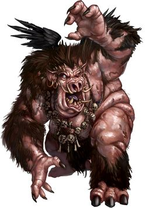

Kuo-Toa
Fish-like race of warm-blooded and amphibious monstrous humanoids that dwell in the waters. They have humanoid bodies and fish-like heads.
ENCOUNTERED FOES
(By appearance)
Kuo-Toa
Fish-like race of warm-blooded and amphibious monstrous humanoids that dwell in the waters. They have humanoid bodies and fish-like heads.
Vrock
Vicious fighters who like to fly down into the enemy and cause as much damage as possible. They prance about in battle, taking briefly to the air and bringing their clawed feet into play. Despite their advantage in mobility, the vrocks’ deep love of battle frequently leads them into melee combats against heavy odds.
Zombie
Move with a jerky, uneven gait. They are clad in the moldering apparel they wore when put to rest, and carry the stench of decay.
Giant Spider
To snare its prey, a giant spider spins elaborate webs or shoots sticky strands of webbing from its abdomen. Giant spiders are most commonly found underground, making their lairs on ceilings or in dark, web-filled crevices. Such lairs are often festooned with web cocoons holding past victims.
Phase Spider
Possesses the magical ability to phase in and out of the Ethereal Plane. It seems to appear out of nowhere and quickly vanishes after attacking. Its movement on the Ethereal Plane before coming back to the Material Plane makes it seem like it can teleport.
Nalfashnee
A towering, corpulent beast, this fiend has the hideous head of a boar and arms ending in fatty, four-fingered hands.
Hellhound
Fire-breathing fiends that take the form of powerful dogs, hell hounds commonly serve evil creatures that use them as guard animals and companions.
Bandit/Henchman
Rove in gangs and are sometimes led by thugs, veterans, or spellcasters. Not all bandits are evil. Oppression, drought, disease, or famine can often drive otherwise honest folk to a life of banditry.
Blinkdog
A blink dog takes its name from its ability to blink in and out of existence, a talent it uses to aid its attacks and to avoid harm.
Goblin
Small, black-hearted humanoids that lair in despoiled dungeons and other dismal settings. Individually weak, they gather in large numbers to torment other creatures.

Wolf
This powerful canine watches its prey with piercing yellow eyes, darting its tongue across sharp white teeth.
Owlbear
A monstrous cross between giant owl and bear, an owlbear’s reputation for ferocity and aggression makes it one of the most feared predators of the wild.
Leshen
Leshens dwell in dense, primeval woods. Fiercely territorial creatures, they use their inborn magic to control the plants and animals wihtin their territory.